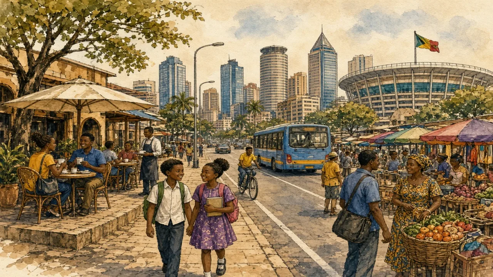

Lagos, Kinshasa, Nairobi and Addis Ababa are among the fastest-growing cities on Earth — and most of the region's people are still in villages. Both facts matter.
Sub-Saharan Africa · Cities & change · Lesson 7 of 7
🌍 World map · ← Around the World: Sub-Saharan Africa · 🌱 Easier version (A2) · ← Sharing the Plate: Food Across a Continent

Each new word is hidden in a sentence. Read it aloud and say what you think the bold word means from the rest of the sentence — then reveal it and see how close you were.
Read each part. After it, there's a quick comprehension check (try the questions from memory first), then one thing to discuss.
Most people in Sub-Saharan Africa still live in rural areas, but the share living in cities has been rising steadily and is expected to continue to rise for decades. Between 1950 and today, the population of Lagos has grown from roughly 300,000 to well over fifteen million, and Kinshasa has also climbed to around seventeen million. Nairobi, Addis Ababa, Dar es Salaam, Abidjan and Johannesburg have all expanded rapidly. People move in search of jobs, schools and opportunities, and cities now produce the majority of national income in many countries. The speed of growth is without precedent: it took Europe well over a century to urbanise on a similar scale.
1. How has the population of Lagos changed since 1950?
2. Why do people move to cities?
1. It has grown from about 300,000 to over fifteen million.
2. For jobs, schools and opportunities.
Rapid growth brings both. Nairobi is known as the “Silicon Savannah” for its technology start-ups, and Lagos has Africa's largest creative industries, from music to film. Entrepreneurs, from market traders to software developers, create jobs in the informal and formal economy. However, growth has outpaced housing and services, so a large share of the urban population lives in informal settlements, where water, sanitation and electricity are limited. Traffic congestion is severe: Lagos opened a bus rapid transit system in 2008, one of the first in Africa, and Addis Ababa launched the first light rail in Sub-Saharan Africa in 2015, but demand has kept rising. Many cities also face flooding as the climate changes, since they are built on coasts and rivers.
1. Why is Nairobi called the “Silicon Savannah”?
2. What is a major problem of growth?
1. Because it has many technology start-ups.
2. Housing and services such as water and transport have not kept pace.
The way these cities develop will shape the lives of hundreds of millions of people. Kigali, the capital of Rwanda, is known for its cleanliness and for banning plastic bags in 2008, and several governments are investing in new districts, metro systems and digital services. Many experts argue that cities should work with, not against, informal markets and neighbourhoods, which house and employ most residents. Young people, who make up the bulk of the population, are expected to drive much of the growth: the number of city residents is projected to roughly double in the coming decades. The more successful the cities are at providing jobs and services, the greater the benefit for the whole region.
1. What is Kigali known for?
2. What do many experts suggest about informal areas?
1. Its cleanliness and a ban on plastic bags in 2008.
2. That cities should work with them, because they house and employ most residents.
A stereotype and the reality rarely match. This lesson's grammar gives you the structure to describe the difference.
Complete each sentence about this topic.
1. The population of Lagos from 300,000 to over fifteen million. (grow — present perfect)
2. There has been a increase in the number of people living in cities. (steady / steadily)
3. The number of city residents will in the coming decades. (double)
1. has grown
2. steady
3. double
1. The share of people in cities rose ten per cent in twenty years. (by / from)
2. Housing costs have risen . (sharp / sharply)
3. Congestion from two hours to three over the last decade. (rise — present perfect)
1. by
2. sharply
3. has risen
Hold on to this — you'll need it in the Speak tab.
“Huts” and “slums” are both partial pictures. Both villages and cities exist, and many families have members in both: a person who works in the city sends money to relatives in the village, and returns for holidays and farming seasons. The big story is not that Africa is “either” rural or urban, but that it is changing quickly, and that people have to decide how to shape the change. Cities that are well planned can become engines of growth, but cities that are not can trap people in poverty. The numbers are often dramatic, but it is people, with their choices and ambitions, who make the story.
This is the heart of the lesson — do all of it out loud. The timer is there to keep you going: fill the time with detail rather than escaping it.
Explain how African cities are growing and what it means for people, as if to a friend who thinks Africa is all villages or all slums. Move through the arc: from village to city → opportunity and strain → planning the future.
Use today's grammar at least three times, and work in at least five key words (urbanisation, informal settlement, congestion, hub, entrepreneur, housing, public transport, growth).
“Governments should invest more in cities than in the countryside.” Discuss.
Tell a story from your own world — work, family, the news — that connects to this topic. Stuck for an idea? Pick one of these and run with it:
🌍 World map · ← Around the World: Sub-Saharan Africa · 🌱 Easier version (A2) · ← Sharing the Plate: Food Across a Continent